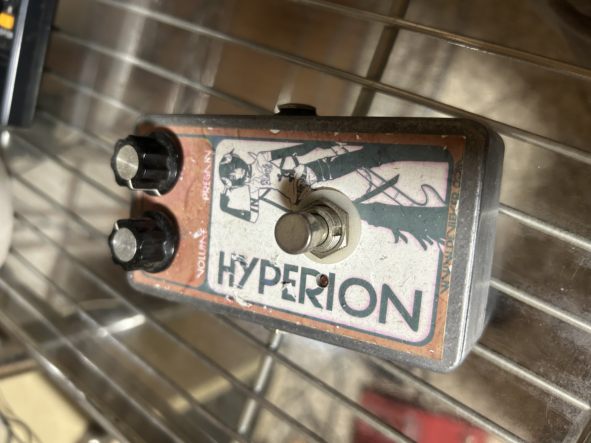
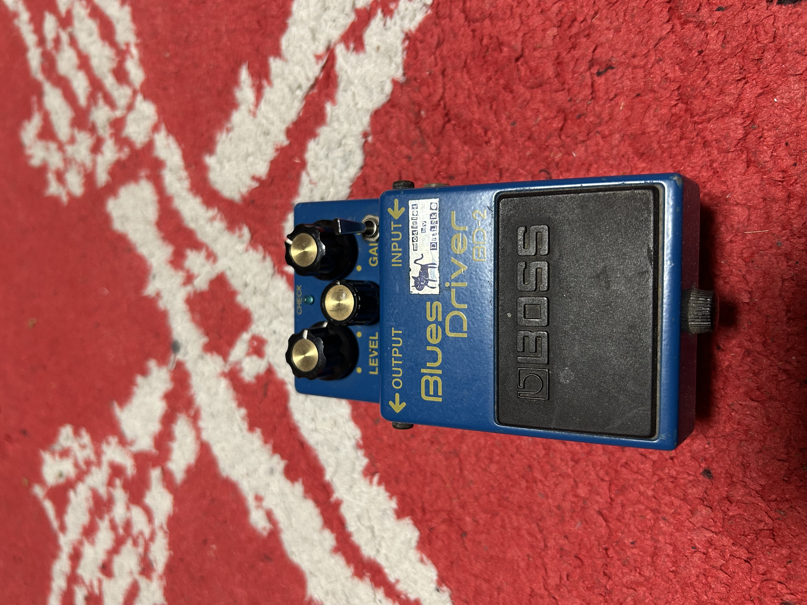
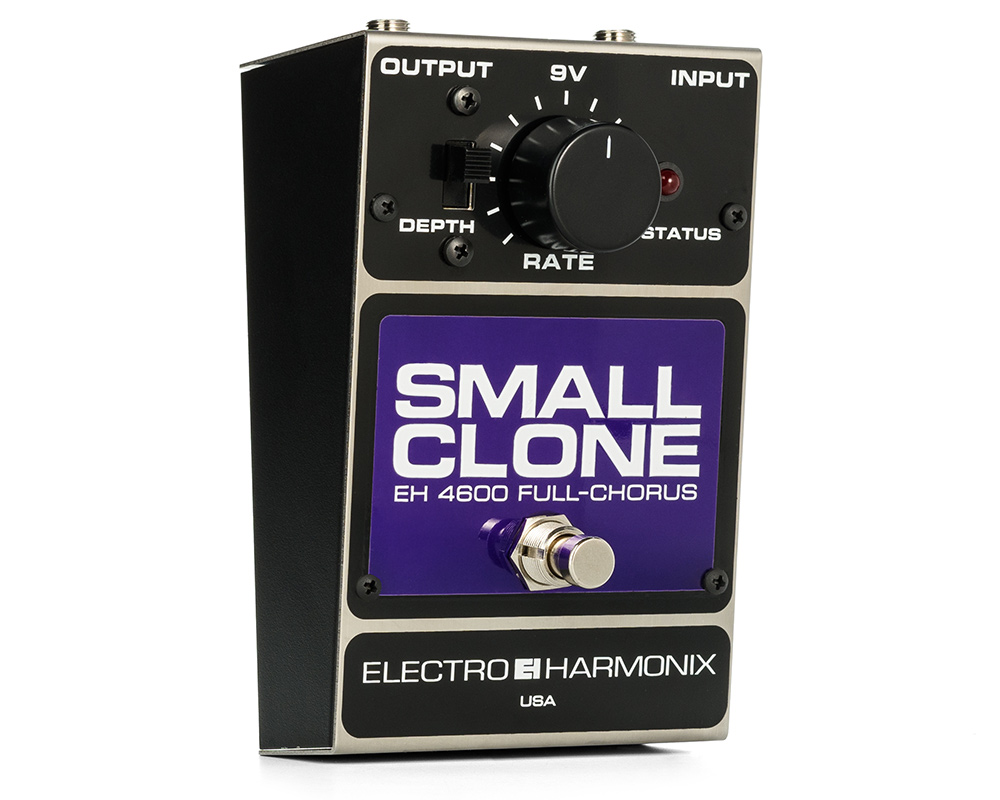
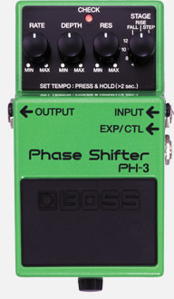
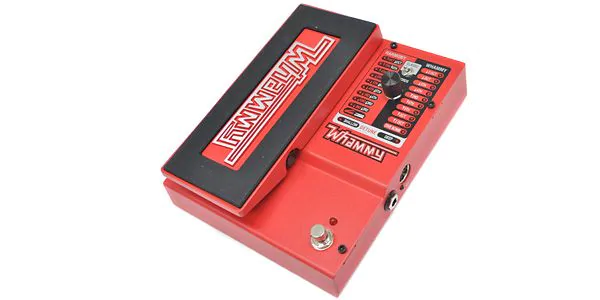
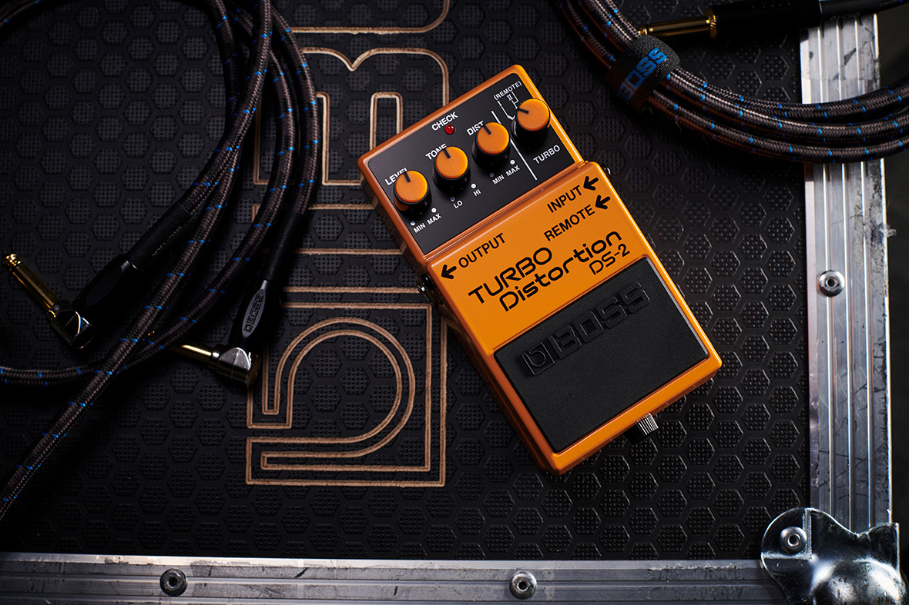

数多のピースが織りなす変幻自在の音色
Pedals
HYPERION

HYPERION
Devi Ever HYPERIONは、強烈なファズサウンドを生み出すエフェクターです。ゲート感の強いブチブチとしたサウンドから、壁のような分厚いファズまで、幅広い音作りが可能です。
BOSS Blues/Driver(BD-2)

BOSS Blues/Driver(BD-2)
BOSS BD-2 Blues Driverは、真空管アンプのような温かみのあるオーバードライブサウンドが特徴です。ピッキングニュアンスに敏感に反応し、ブルースからロックまで幅広く使えます。
Ellectro Harmonics/Small Clone

Ellectro Harmonics/Small Clone
Electro-Harmonix Small Cloneは、アナログコーラスの名機として知られています。独特の揺らぎと温かみのあるサウンドは、多くのギタリストに愛されています。
BOSS/Phase Shifter(PH-3)

BOSS/Phase Shifter(PH-3)
BOSS PH-3 Phase Shifterは、多彩なフェイズサウンドを生み出すペダルです。クラシックなヴィンテージフェイザーから、ユニークなステップフェイザーまで、7種類のモードを搭載しています。
TC ellectronic/FLASH BACK x4

TC ellectronic/FLASH BACK x4
TC Electronic Flashback X4 Delay & Looperは、高品質なディレイサウンドとルーパー機能を兼ね備えたペダルです。多彩なディレイタイプとTonePrint機能を搭載し、自由な音作りが可能です。
Digitech/Whammy

Digitech/Whammy
Digitech Whammyは、ピッチシフトエフェクトの代名詞的存在です。ペダル操作によるスムーズなピッチベンドやハーモニー効果で、多くのギタリストに独創的なサウンドを提供します。
BOSS/Turbo Distortion(DS-2)

BOSS/Turbo Distortion(DS-2)
BOSS DS-2 Turbo Distortionは、2つのターボモードを搭載したディストーションペダルです。クラシックなディストーションから、より過激で中域に特徴のあるサウンドまで作り出せます。